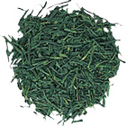
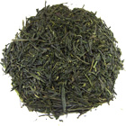

茶葉の種類
| 日本茶 | |
|---|---|
|  |
煎茶全製茶生産量の約8割と一番多く、もっとも親しまれている緑茶です。煎じたお茶を意味していましたが、実際の製法は生葉を蒸して、揉み、乾燥させたものです。 鮮やかな緑色で甘味と渋味があり、入れ方や産地によっていろいろな味が楽しめます。 |
|  |
玉露製法は煎茶と変わりませんが、新芽が伸びる時期にすだれなどで茶の木を覆いかぶせて日光を遮断し日影で育てられます。 手間をかけて作られる玉露は、独特の甘味とうま味をもった日本茶の最高級品です。 |
抹茶抹茶も玉露と同様に、大事に育てられた新芽から作られるお茶です。 抹茶は蒸された茶葉を揉まずに乾燥し、石臼で挽かれ粉末にされます。 茶葉をまるごと飲むので、お茶本来の栄養も十分に取ることが出来ます。 |
|